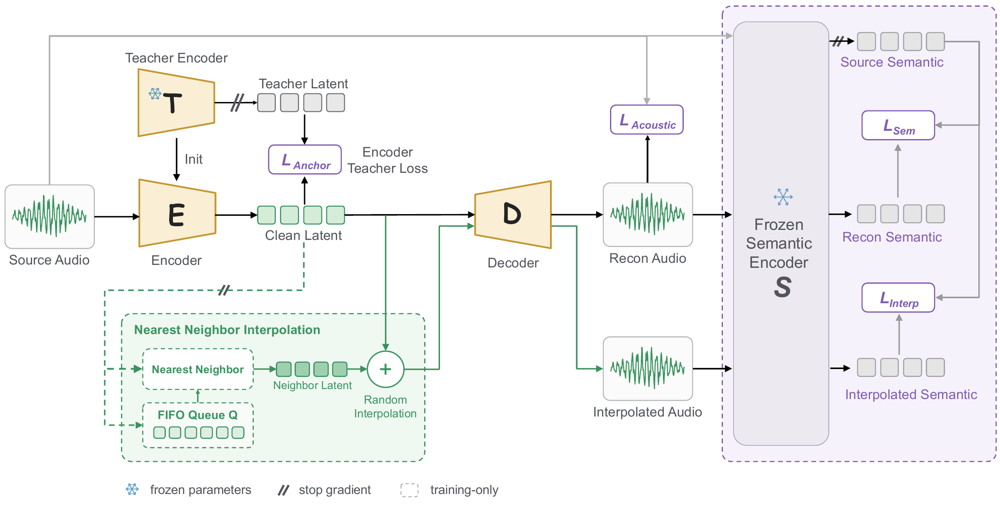

ANONYMOUS RESEARCH DEMO
IAE: Interpolative Autoencoder
for Improving Latent Continuity
in Audio Generation
Learning to decode between neighboring representations.
Explore the results in speech, music, and environmental sound.
Abstract
Diffusion Transformer (DiT) based audio generation relies on a pretrained autoencoder to map audio into a latent space, where the latent quality directly influences generation performance. Recent work has significantly improved the semantic structuring of representations through distillation or downstream tasks. However, representation continuity has seen little further progress. Continuity matters because the decoder must robustly reconstruct generation-biased latent caused by imperfect training or sampling of DiT. Existing continuity methods still rely on fixed-magnitude Gaussian noise injection or early KL regularization, both of which may reduce reconstruction fidelity when decoding biased latent, thereby degrading final generation quality.
In this paper, we propose the Interpolative Autoencoder (IAE), which preserves the semantic structure of the pretrained encoder while improving representation continuity through semantic reconstruction on latent-pair interpolations rather than single-point perturbation. IAE pairs each latent with its nearest neighbor in the current encoding distribution and imposes semantic reconstruction supervision at interpolation points between pairs. This design allows the noise magnitude to adapt according to the semantic structure around each sample’s neighborhood, effectively filling low-density regions between neighboring samples and alleviating the problem of decoding generation-biased latent.
From an optimization perspective, IAE is essentially optimizing the interpolated Fréchet Audio Distance (iFAD) indirectly. This metric has been shown in the image domain to assess the structuring and continuity of the latent space at the representation learning stage and to correlate significantly with final generation quality. Experimental results confirm this connection. Compared with existing RAE and VAE variant baselines, IAE achieves a lower iFAD while also obtaining better gFAD and WER on audio generation tasks, demonstrating that by improving representation continuity IAE can tangibly enhance generation quality.
Supervision between neighbors.
A training-time interpolation branch, guided by a frozen semantic encoder.

From text to audio.
The same text condition. Five audio generation systems.
Selected examples are curated to illustrate IAE’s strengths, rather than randomly sampled. Challenging cases are retained below. These demos are not a listening-test result.
Listen between the endpoints.
Compare clean reconstruction and midpoint decoding, including the new semantic-supervision controls.
Each tokenizer retrieves its own neighbor from the frozen evaluation pool. This is a model-specific nearest-neighbor comparison, not a fixed-pair experiment. Available interpolation positions: α = 0 and 0.5.
Challenging cases.
Retained unfavorable examples make the limits of the method audible.